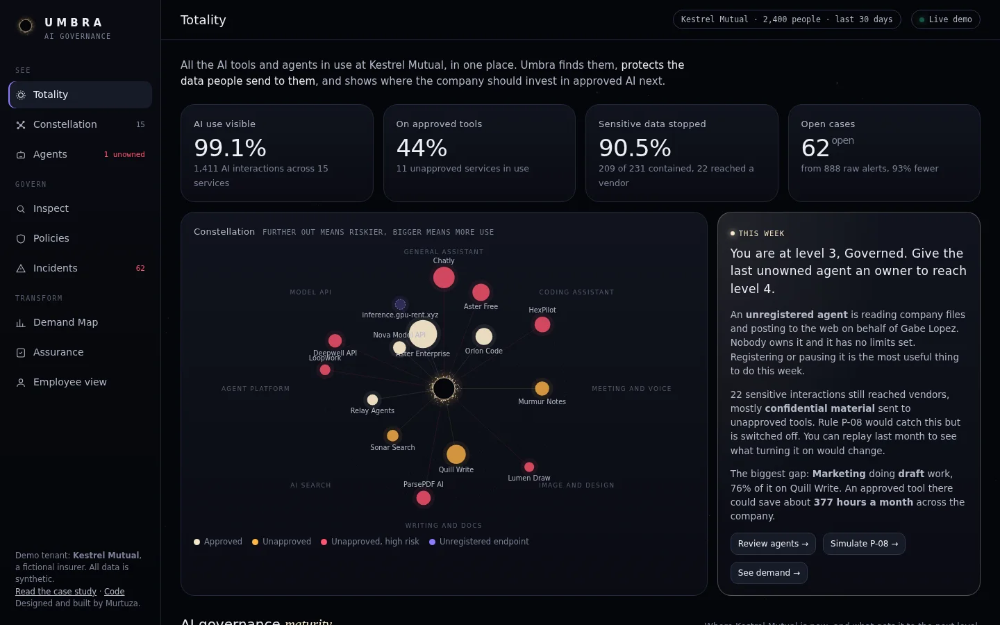
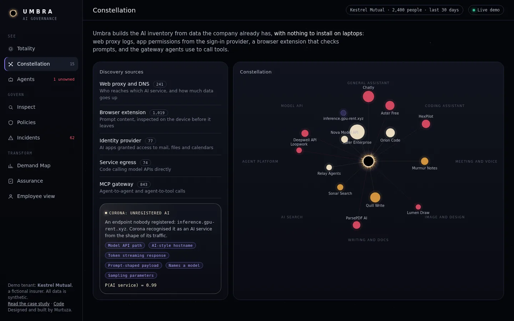
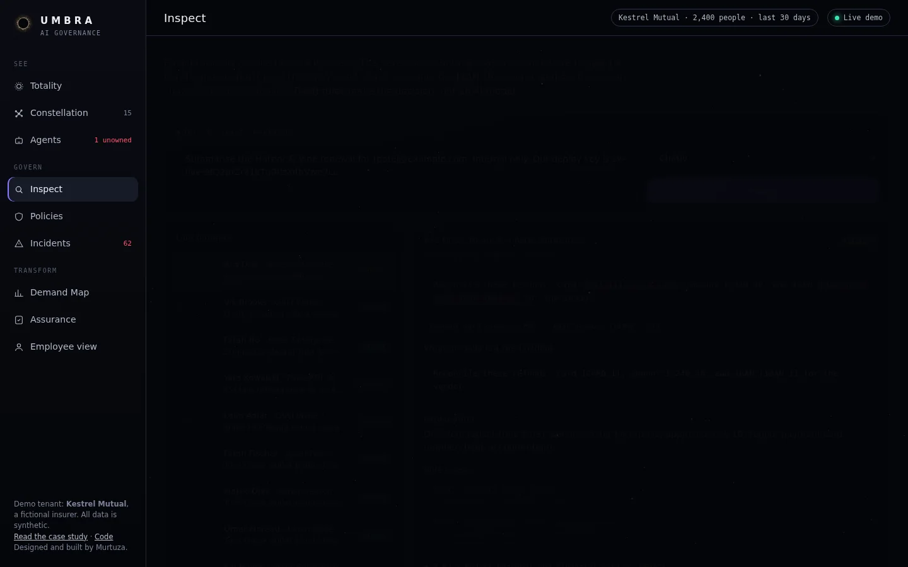
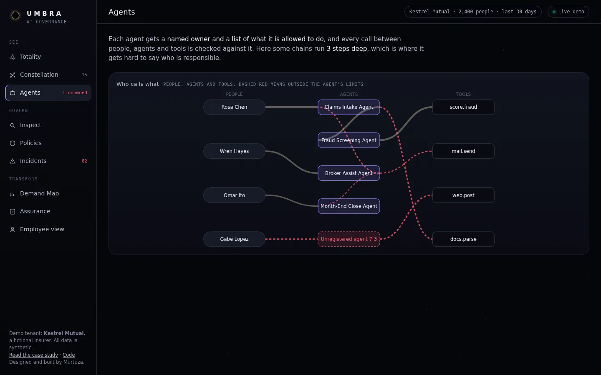
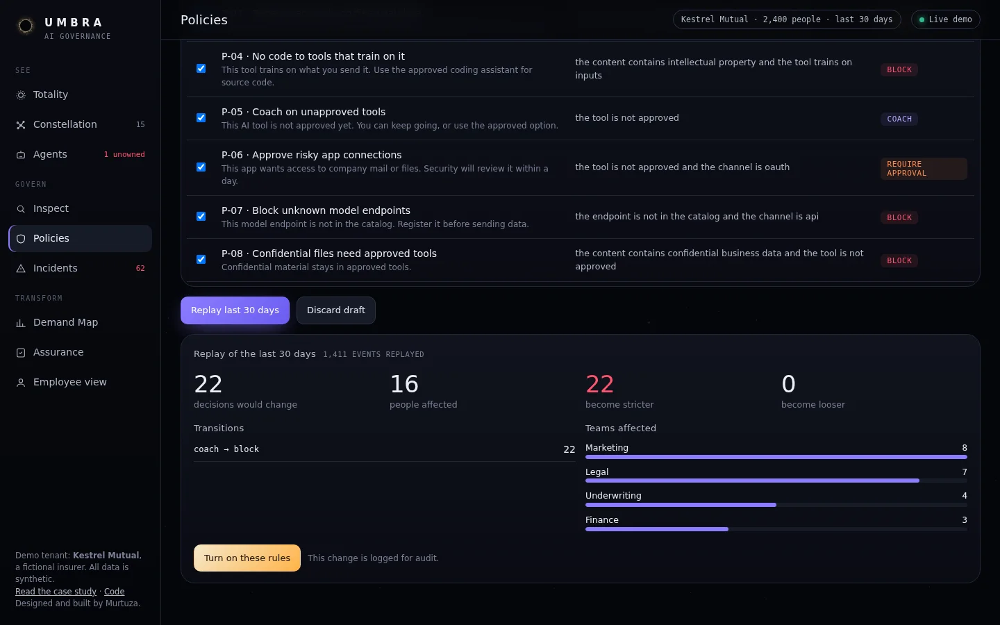
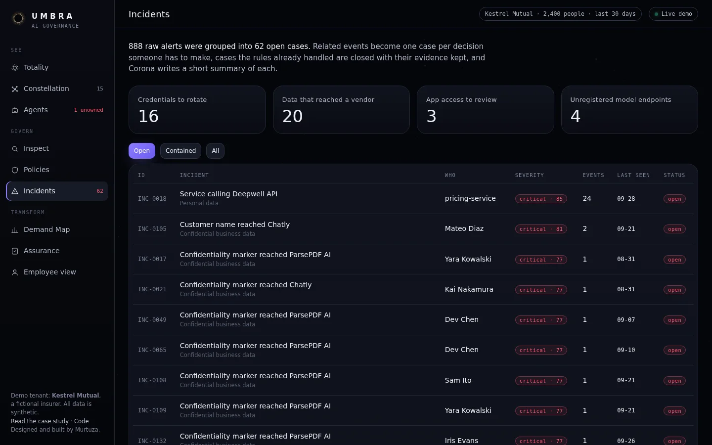
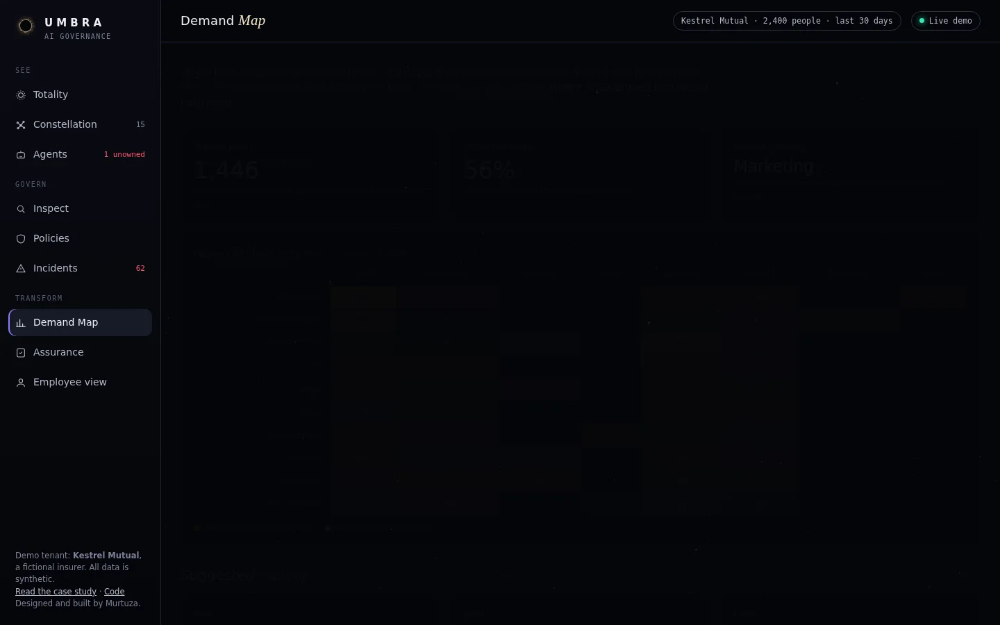
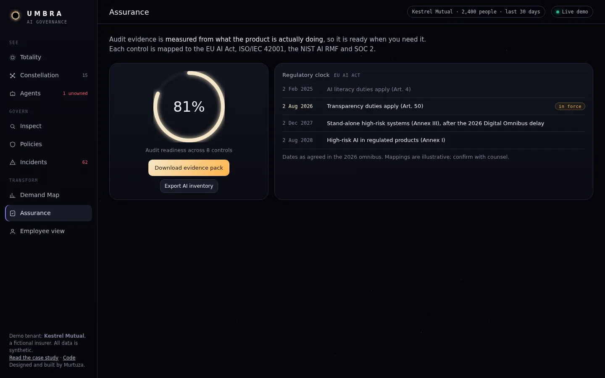
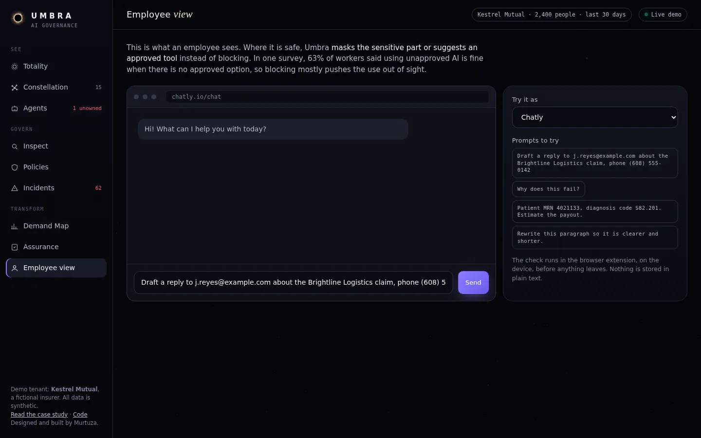

Umbra is AI that governs AI. It finds every AI tool and agent inside a company, stops sensitive data before it leaks, and turns the shadow AI it uncovers into the company's AI roadmap.
of workers admit to using AI tools their employer never approved.
BlackFog survey of 2,000 workers at 500+ person companies, Jan 2026have put enterprise research or datasets into unapproved AI tools. 27% have shared employee data.
Same surveybelieve using unapproved AI is fine when no approved option exists. Blocking does not stop them; it hides them.
Same surveyBetween 2024 and 2025 the leading AI security startups were bought by platform vendors: Robust Intelligence by Cisco, Protect AI by Palo Alto Networks, Lakera by Check Point, Prompt Security by SentinelOne. The category is validated. The tools are now priced and packaged for the largest enterprises, and they are built to say no.
The EU AI Act's transparency duties (Article 50) apply from 2 August 2026. The 2026 Digital Omnibus pushed stand-alone high-risk obligations to 2 December 2027, which is a deferral, not a reprieve. Companies need evidence of governance, not a policy PDF.
For three years we have asked what AI can make. The next decade asks a harder question: who governs the AI that is already everywhere? Security has been the department of no. In the AI era, no is how you lose: to the competitor who said yes, safely.
Every unapproved tool someone reaches for marks a job the company never equipped them for. Umbra reads shadow AI as the most honest map of where the business wants AI, and hands it to the CIO as a ranked transformation backlog. Security telemetry becomes strategy.
Umbra's AI layer, Corona, reads, classifies, drafts policy and explains incidents. It never makes the enforcement call. Every rule it writes compiles into deterministic policy, is replayed against real traffic, and is approved by a person. AI proposes. Rules dispose. People approve.
Agents call agents that call tools, three hops deep, with nobody's name on the chain. Umbra gives every agent an identity, an owner and a mandate, checks every hop at the MCP gateway, and computes each agent's blast radius: what an attacker would inherit if it were compromised.
Proto-personas from secondary research and my time delivering enterprise AI and digital transformation programmes. They are hypotheses to validate in discovery interviews, not findings.
| Person | Job to be done | What they fear | What Umbra gives them |
|---|---|---|---|
| CISO | Reduce AI risk without becoming the reason the company falls behind | A leak through a tool nobody knew existed | Totality: every AI service and agent, risk-scored, with leaks stopped at the edge |
| SOC analyst | Know which of hundreds of alerts matter today | Alert fatigue, missing the one that counted | A queue grouped by the decision a human makes, with Corona's narrative on each |
| GRC lead | Prove governance to auditors and regulators | Evidence assembled by hand, the week before the audit | Controls computed from live state, mapped to four frameworks, exportable as an evidence pack and an AI bill of materials |
| CIO / transformation lead | Decide where AI investment pays off next | Buying tools nobody uses while people use tools nobody bought | The Demand Map: shadow usage as a ranked backlog of approved AI plays |
| Employee | Get the work done with the best tool available | Being blocked, or quietly getting in trouble | A coach, not a cop: redact-and-send, and a nudge toward an approved tool that does the same job |
You cannot govern what you cannot see. Discovery ships first and works from logs the company already has, with nothing to install.
Enforcement is pure rules with validated detectors. Same input, same decision, and a trace an auditor can read. No model on the enforcement path.
Redact and send beats refuse. A nudge toward an approved tool beats a wall. The strictest action is reserved for secrets and regulated data.
No agent acts without a named person, a mandate and a measured blast radius. Autonomy is something agents are granted, not something they assume.
Every decision is already an audit record. Compliance should be a download, not a project.
The north star is not blocks or alerts. It is the share of AI work flowing through approved tools, because that single number moves only when security and transformation both win.
Everything below is live and running on a working engine with 16 tests. The demo tenant is Kestrel Mutual, a fictional 2,400-person insurer, with 30 days of synthetic telemetry.
Totality is the share of AI activity Umbra can see and classify. Around it: the paved-road rate, leak prevention, SOC load, and a morning brief from Corona that names the two moves that matter this week.

Distance from the centre is risk, size is usage, colour is approval. Risk is computed from facts a buyer can verify: whether the vendor trains on inputs, how long it keeps them, which attestations it holds and where it processes data. Corona recognises AI endpoints nobody registered from traffic shape alone.

Detectors validate, not just pattern-match: card numbers pass Luhn, bank accounts pass mod-97, SSNs respect issuance rules. Each decision shows what left the building and the full rule trace.

The delegation graph shows people, agents and tools, with every call outside a mandate in dashed red. Umbra computes blast radius through delegation: the broker assistant can reach financial data it was never given, because it can call an agent that can.

Corona compiles plain English into policy, flags what it is unsure of, and writes the rule back in English so a reviewer can check it understood. The time machine replays 30 days of traffic against the draft: how many decisions change, who is affected, which teams feel it.

Umbra groups events by the decision a human would make, not by the event that fired. Anything policy already contained closes itself with evidence attached. Corona writes every incident twice: precisely for the analyst, kindly for the employee.

Shadow usage clustered by team and job to be done, scored by volume, unmet need and growth, and projected to company scale. The output is a Now / Next / Later roadmap of approved AI plays. This is where a security product becomes a transformation product.

Eight controls computed from live product state and mapped to the EU AI Act, ISO/IEC 42001, the NIST AI RMF and SOC 2. One click exports an evidence pack; another exports an AI bill of materials in CycloneDX style. A five-level maturity ladder tells the board the story.

What the person on the other side sees: sensitive details masked before sending, a one-click switch to the approved tool, and a quiet thumbs-up when everything is fine. The check runs on the device before anything leaves.

The same engine that runs the console runs here, in your browser. Nothing on this table is typed by hand. ● LIVE FROM THE ENGINE
| Measure | Before Umbra's policies | After one Corona-authored change | Why it matters |
|---|---|---|---|
| Running the engine… | |||
Demo data is synthetic and seeded, so results are reproducible. "After" enables the confidential-files rule through the time machine and registers the one shadow agent, exactly as a user can in the console.
Paved-road rate: share of AI work on approved tools. It rises only when people are protected and served.
Leak prevention rate, and exposures per 1,000 employees that reached a vendor.
Coach override rate and time to approve a requested tool. If people route around Umbra, it is failing.
Open incidents per 1,000 employees and noise reduction from raw alerts. Analysts should see decisions, not events.
Regulated companies of 500 to 5,000 people (insurance, fintech, health, legal) with a lean security team, an AI mandate from the board, and no appetite for a six-month platform rollout. The economic buyer is the CISO; the co-sponsor is the CIO, because the Demand Map is theirs.
Read-only, 48 hours, nothing to install: connect the identity provider and proxy logs, get a Constellation and a Demand Map. It sells the problem and the upside in the same meeting, and it is the report a CISO forwards to the board.
Managed security providers who need AI coverage for their clients; cyber insurers, who increasingly ask for evidence of AI controls and can reward it; audit firms who want evidence they can test.
Product-led land through the scan, sales-assisted expansion into Govern and Assure, then per-agent pricing as agent estates grow. Expansion revenue tracks the customer's own AI adoption.
Proposed pricing for the case study. At Kestrel Mutual's size, Govern plus Assure is roughly $259k ARR before agents.
They see traffic, then allow or block. Umbra adds prompt-level coaching, agent mandates and the Demand Map, and can sit on top of their logs rather than replace them.
Now inside large platforms and priced for the largest buyers. Umbra competes on time to value, explainability, and the transformation story for the CIO.
They collect questionnaires. Umbra produces evidence from the system itself, so the control and its proof are the same thing.
| Risk | How Umbra de-risks it |
|---|---|
| False positives erode trust | Coach is the default, block is reserved for secrets and regulated data, and every change is replayed before enforcement. Override rate is a tracked guardrail. |
| Inspecting prompts feels like surveillance | Inspection runs on the device; Umbra stores findings and hashes, not text. Employees see exactly what was masked and why. Designed to be explainable to works councils. |
| Platforms bundle "good enough" AI security | Compete where bundles are weakest: mid-market time to value, agent mandates, and the Demand Map that gives the CIO a reason to buy. |
| An AI that governs AI can be fooled | Corona never enforces. Its output is compiled, simulated and approved by a person, and the enforcement path is deterministic. |
The umbra is the darkest part of a shadow. The mark is a dark disc (the AI you cannot see into) ringed by a corona of particles (the light Umbra brings). Particle density falls away from the rim like a real corona, and a few particles burn violet: the signals Corona has found. It is built from the same square particles as my personal mark, so the product and its author share a visual language.
Type: Space Grotesk for the interface, Instrument Serif for voice, JetBrains Mono for data. Voice: calm, precise, luminous. Never fear-based.